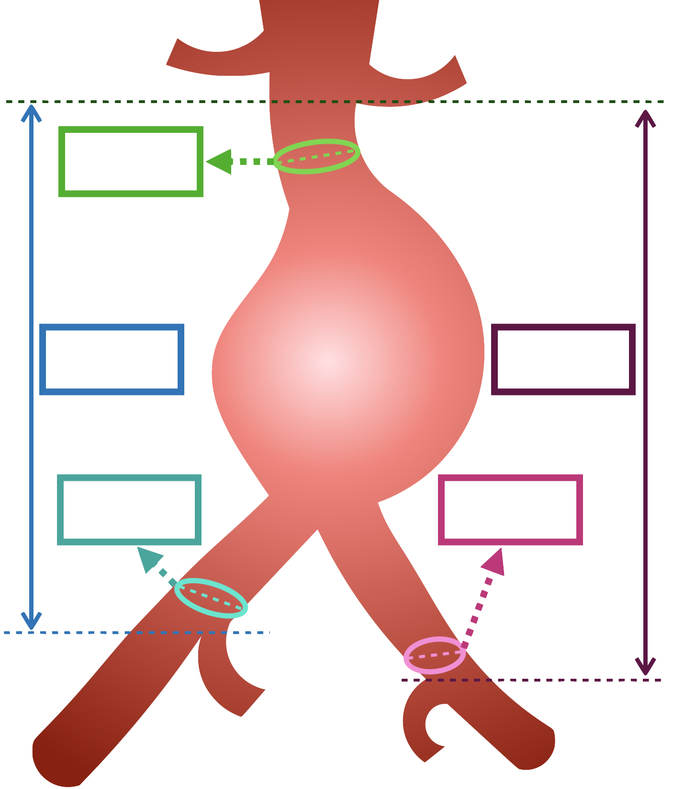

📏 Medidas del Paciente
Introduce las medidas anatómicas en los campos inferiores para obtener la prótesis EVAR adecuada.
Los valores introducidos se mostrarán automáticamente en la imagen de referencia.

🎯 Resultados y Recomendaciones
Introduce las medidas del paciente y haz clic en "Calcular Prótesis" para obtener las recomendaciones.